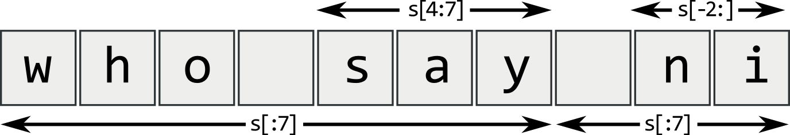
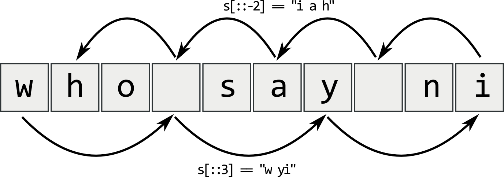
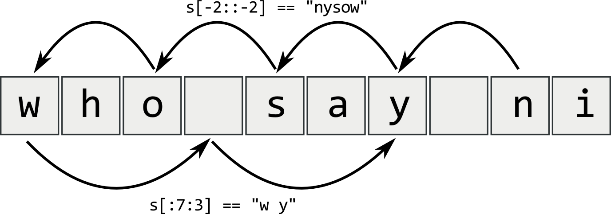

Wprowadzenie do programowania w języku Python¶
Wbudowane typy Pythona¶
Interpreter języka Python posiada następujące wbudowane typy danych:
| Kategoria typu | Nazwa typu | Opis |
|---|---|---|
| None | Types.NoneType | Obiekt None (obiekt null) |
| Liczby | bool | True lub False (Boolean) |
| int | Liczba całkowita | |
| float | Liczba zmiennoprzecinkowa | |
| complex | Liczba zespolona | |
| Zbiory | set | Zbiór zmienny |
| frozenset | Zbiór niezmienny | |
| Sekwencje | str | Łańcuch znaków |
| list | Lista | |
| tuple | Krotka | |
| bytes | Ciąg bajtów | |
| Odwzorowania | dict | Słownik |
| Pliki | file | Plik |
W języku Python zmienne nie posiadają typu – posiadają go wartości wskazywane przez zmienne. Do sprawdzenia jakiego typu jest wartość wskazywana przez zmienną służy funkcja type():
>>> L = [1,2,3]
>>> type(L)
<type 'list'>
>>> type(L) == list
True
Podstawy składni Pythona¶
Komentarze¶
Komentarze w Pythonie są oznaczane za pomocą znaku hasza (#).:
# Cała linia komentarza
x = 1 # Krótki komentarz: przypisz do zmiennej x wartość 1
Zmienne i przypisania¶
Ponieważ Python jest językiem z dynamiczną kontrolą typów, zmienne nie muszą mieć określonego typu w momencie deklaracji. Zmienna o określonej nazwie może wskazywać na obiekty różnych typów.:
>>> var = 'text'
>>> var
'text'
>>> var = 1
>>> var
1
Usunięcie zmiennej jest dokonywane przy pomocy instrukcji del.:
>>> del var
var
Traceback (most recent call last):
File "<console>", line 1, in <module>
NameError: name 'var' is not defined
Operatory¶
Operatory arytmetyczne¶
| Składnia | Opis |
|---|---|
| x + y | Dodaje liczby x i y. |
| x - y | Odejmuje liczbę y od x. |
| x * y | Mnoży liczbę x przez y. |
| x / y | Dzieli liczbę x przez y. Wynikiem jest liczba zmiennoprzecinkowa, nawet jeśli oba operandy są liczbami całkowitymi. |
| x // y | Dzielenie z odrzuceniem części dziesiętnej. Wynikiem jest zawsze liczba całkowita int. |
| x % y | Oblicza resztę z dzielenia (modulus) x przez y. |
| x ** y | Podnosi liczbę x do potęgi y. |
| -x | Zmienia znak liczby x, jeśli jest niezerowa. Jeśli x jest zerem, operator nic nie robi. |
>>> a, b, c = 5.3, 2.0, 1.0
>>> a / b
2.65
>>> a // b
2.0
>>> a % b
1.3
>>> a * b
10.6
Operatory skrócone: +=, -=, *=, /=, itp.
>>> a = 5
>>> a += 8
13
Operatory porównania¶
| Składnia | Opis |
|---|---|
| x < y | Znak mniejszości |
| x <= y | Mniejszy lub równy |
| x > y | Znak większości |
| x >= y | Większy lub równy |
| x == y | Znak równości |
| x != y | Różny od |
>>> a, b, c = 5.3, 2.0, 1.0
>>> a > b
True
>>> a == b
False
>>> a != b
True
Operatory logiczne¶
- Język Python udostępnia trzy operatory logiczne:
- and – koniunkcja
- or – alternatywa
- not – negacja
>>> t = True
>>> f = False
>>> t2 = True
>>> t and f
False
>>> t and t2
True
>>> not f
True
Operatory bitowe¶
| Składnia | Opis |
|---|---|
| i | j | Bitowe OR dla liczb int i oraz int j. Zakładamy, że liczby ujemne są przedstawiane wraz z uzupełnieniem dwójkowym. |
| i ^ j | Bitowe XOR (LUB wyłączające) liczb i oraz j. |
| i & j | Bitowe AND liczb i oraz j. |
| i << j | Przesunięcie i w lewo o j bitów. |
| i >> j | Przesunięcie i w prawo o j bitów. |
| ~i | Odwrócenie bitów i. |
Używanie wcięć kodu¶
Bloki kodu są oznaczane przez wcięcia wierszy. Liczba spacji we wcięciu może być różna, jednak wszystkie instrukcje wewnątrz bloku muszą być wcięte o tyle samo.
Oba bloki w pierwszym przykładzie są poprawne:
if True:
print( "Prawda" )
else:
print( "Falsz" )
Drugi blok w drugim przykładzie wygeneruje błąd:
if True:
print( "Odpowiedz" )
print( "Prawda" )
else:
print( "Odpowiedz" )
print( "Falsz" )
Łańcuchy znaków¶
Zwykłe łańcuchy znaków w Pythonie tworzone są poprzez ujęcie danego tekstu w apostrofy (‘) lub cudzysłów (”). Ten sam znak ograniczający powinien rozpoczynać i kończyć łańcuch. Można także użyć potrójnie cytowanego łańcucha znaków z użyciem trzech znaków cytowania – trzech apostrofów (‘’‘) lub trzech cudzysłowów (“””).
word = 'słowo'
sentence = "To jest zdanie."
paragraph = """To jest akapit. Składa się z kilku wierszy i zdań."""
Jeśli wewnątrz zwykłego łańcucha znaków ma zostać użyty inny łańcuch znaków, to należy ograniczyć każdy z łańcuchów za pomocą innych znaków. W przeciwnym wypadku konieczna będzie zmiana znaczenia znaków ograniczających.
Z1 = "Używamy 'apostrofów', \"cudzysłów\" poprzedzamy ukośnikiem"
Z2 = 'Znaki \'apostrof\' poprzedzamy ukośnikiem, a "cudzysłów" nie'
Formatowanie łańcuchów znaków¶
Łańcuchy znaków mogą być formatowane z użyciem predefiniowanego formatującego łańcucha znaków z listą zmiennych.
>>> letter = """Szanowny Panie %s, \n
... Dziękujemy za przesłanie nam pańskiego %s.\n
... Skontaktujemy się z Panem w %d roku."""
>>> print( letter % ("Kowalski", "CV", 2010) )
Szanowny Panie Kowalski,
Dziękujemy za przesłanie nam pańskiego CV.
Skontaktujemy się z Panem w 2010 roku.
>>> record = "%s | %s | %s | %08d"
>>> print( record % ("Guido", "van Rossum", "Dutch", 1956))
Guido | van Rossum | Dutch | 00001956
Format specyfikatora konwersji:
%[(klucz słownika)][flaga konwersji][min. szerokość][precyzja] [typ konwersji]
| Flaga konwersji | Znaczenie |
|---|---|
| 0 | Uzupełnienie zerami szerokości pola |
| - | Justowanie do lewej |
| (spacja) | Wstawienie spacji przed dodatnią liczbą |
| + | Wstawienie znaku przed liczbą |
| Typ konwersji | Znaczenie |
|---|---|
| s | string lub unicode |
| d | Liczba całkowita |
| f, F | Liczba zmiennoprzecinkowa |
| e, E | Liczba zmiennoprzecinkowa w formacie wykładniczym |
| x, X | Liczba w formacie szesnastkowym |
| o | Liczba w formacie ósemkowym |
Przykład
>>> "%+10.3f" % (3.14)
' +3.140'
>>> "%x" % 255
'ff'
- format(*args, **kwargs)¶
W Pythonie 3.0 operator % został zastąpiony znacznie potężniejszą metodą formatowania łańcuchów, format(). Wsparcie dla str.format() zostało przeportowane do Pythona 2.6. Zarówno łańcuchy znaków 8-bitowe, jak i Unicode, mają teraz metodę format(), która traktuje łańcuch jako wzorzec i pobiera argumenty do jego sformatowania. Wzorzec zawiera nawiasy klamrowe {} jako znaki specjalne.
>>> # Podstaw argument o numerze 0
>>> "User ID: {0}".format("root")
'User ID: root'
>>> # Użyj argumentów nazwanych
>>> "ID: {id} Last seen: {login}".format(id="root", login="5/03/2012")
'ID: root Last seen: 5/03/2012'
Warunkowe wykonanie kodu¶
Instrukcja if, else oraz elif¶
if x == True:
print( "x jest prawdą" )
elif y == True:
print( "y jest prawdą" )
else:
print( "oba są fałszem" )
Wszystkie wartości w Pythonie mogą być reprezentowane przez wartości logiczne, niezależnie od ich typu. Wyrażenie przyjmuje wartość False, jeżeli jest predefiniowaną stałą False, obiektem specjalnym None, pustą sekwencją, kolekcją (na przykład, pusty łańcuch znaków, lista lub krotka) lub liczbowym typem danych o wartości 0. Wszystko pozostałe jest uznawane za True.
>>> bool(-1.23)
True
>>> bool(0)
False
>>> bool([])
False
>>> bool([0, 0, 0])
True
Klauzula else jest opcjonalna.
Wyrażenie warunkowe¶
Zapis z wykorzystaniem instrukcji warunkowej if/else
if condition:
x = true_value
else:
x = false_value
może być skrócony przy pomocy wyrażenia warunkowego
x = true_value if condition else false_value
Przykład
>>> var = "$Password"
>>> print (var.upper() if var.startswith('$') else var.lower())
$PASSWORD
Pętle¶
Instrukcja for¶
Pętla operująca na sekwencjach.
for zmienna in iteracja:
pakiet
Do części zmienna zostaje po kolei przypisane odniesienie do każdego obiektu w części iteracja. Wymieniona iteracja to dowolny typ danych, przez który można przejść, między innymi ciągi tekstowe, listy, krotki oraz inne kolekcje typów danych Pythona.
Przykład 1 - wykorzystanie łańcucha znaków
>>> word = "Python"
>>> list = []
>>> for ch in word:
... list.append(ch)
...
>>> list
['P', 'y', 't', 'h', 'o', 'n']
Przykład 2 - wykorzystanie funkcji range()
>>> string = ""
>>> for i in range(len(list)):
... string += list[i]
...
>>> string
Python
Przykład 3 – wykorzystanie funkcji enumerate(string)
>>> dict = {}
>>> for i, ch in enumarate(string):
... dict[i] = ch
...
>>> dict
{0: 'P', 1: 'y', 2: 't', 3: 'h', 4: 'o', 5: 'n'}
Przykład 4 – wykorzystanie słownika
>>> for key in dict
... print( key, '=', dict[key] )
...
0 = P
1 = y
2 = t
3 = h
4 = o
5 = n
Przykład 5. Wykorzystanie funkcji zip(), która z dwóch lub więcej sekwencji tworzy listę krotek
>>> s = 'abc'
>>> t = [0,1,2]
>>> zip(s,t)
[('a', 0), ('b', 1), ('c', 2)]
>>> # Lista wykorzystana w pętli for
>>> for ss, st in zip(s,t):
... print( ss, st )
...
a 0
b 1
c 2
Instrukcje break i continue¶
- break
- przerwanie wykonywania i wyjście z bieżącej pętli
- continue
- przerwanie wykonywania bieżącej iteracji i rozpoczęcie kolejnej iteracji bieżącej pętli
>>> word = "Pithon. Szkolenie"
>>> string = ""
>>> for ch in word:
... if ch == 'i':
... string += 'y'
... continue
... if ch == ' ':
... break
... string += ch
...
>>> string
Python.
Instrukcja for-else¶
W języku Python można użyć instrukcji else w pętli for. Blok występujący po else wykona się jeśli wewnątrz pętli for nie wystąpiła instrukcja break.
Czyli kod
broke_out = False
for x in seq:
do_something(x)
if condition(x):
broke_out = True
break
do_something_else(x)
if not broke_out:
print( "I didn't break out" )
można zastąpić kodem
for x in seq:
do_something(x)
if condition(x):
break
do_something_else(x)
else:
print( "I didn't break out" )
Obsługa błędów¶
Jeśli w trakcie działania programu wystąpi zgłoszenie nieobsłużonego wyjątku, Python zatrzyma wykonywanie programu i wyświetli informacje o ostatnich wywołaniach.
>>> 10 * (1/0)
Traceback (most recent call last):
File "<stdin>", line 1, in ?
ZeroDivisionError: integer division or modulo by zero
>>> 4 + spam*3
Traceback (most recent call last):
File "<stdin>", line 1, in ?
NameError: name 'spam' is not defined
>>> '2' + 2
Traceback (most recent call last):
File "<stdin>", line 1, in ?
TypeError: cannot concatenate 'str' and 'int' objects
Informacje o ostatnich wywołaniach (backtraces) powinny być odczytywane od ostatniego wiersza do pierwszego. W ostatnim wierszu podany jest nieobsłużony wyjątek, który został zgłoszony. Powyżej znajduje się nazwa pliku, numer wiersza, nazwa funkcji oraz wiersz, który spowodował zgłoszenie wyjątku.
Obsługa błędów jest wykonywana poprzez wykorzystanie wyjątków, które są ujmowane w bloki try i obsługiwane w blokach except. Jeśli napotykany jest błąd, wykonywanie kodu z bloku try jest zatrzymywane i przenoszone do bloku except.
>>> while True:
... try:
... x = int(input("Please enter a number: "))
... break
... except ValueError, error:
... print( "Oops!", error, "Try again..." )
Wartość typu wyjątku odnosi się albo do wyjątków wbudowanych albo do samodzielnie zdefiniowanego obiektu wyjątku. Wartość error jest zmienną, która przechwytuje dane zwracane przez wyjątek. Blok try obsługuje także wykorzystywanie bloku else po ostatnim bloku except. Blok else jest wykonywany, jeśli blok try zakończy działanie bez otrzymania wyjątku.
>>> try:
... f = open("plik.txt", 'r')
... except IOError, error:
... print( error )
... else:
... print( 'plik.txt has', len(f.readlines()), 'lines' )
... f.close()
Blok except może obsługiwać wiele typów wyjątków:
... except (RuntimeError, TypeError, NameError):
... pass
Podstawowe typy błędów¶
| Typ | Opis |
|---|---|
| Exception | Klasa bazowa dla wszystkich klas opisujących błędy |
| KeyError | Próba użycia nieistniejącego klucza w słowniku |
| ValueError | Wyszukiwanie w liście nieistniejącej wartości |
| AttributeError | Wywołanie nieistniejącej metody obiektu |
| NameError | Użycie nieistniejącej zmiennej |
| TypeError | Mieszanie niezgodnych typów danych |
| IOError | Błąd operacji we/wy |
| ZeroDivisionError | Błąd dzielenia przez zero |
| SyntaxError | Błąd składni |
| IndexError | Odwołanie do nieistniejącego indeksu sekwencji |
Zgłaszanie wyjątków¶
Wyjątki mogą być zgłaszane przy pomocy instrukcji raise.
>>> raise NameError('HiThere')
Traceback (most recent call last):
File "<stdin>", line 1, in ?
NameError: HiThere
Blok finally służy do sprzątania zasobów, gdy zgłoszona zostanie sytuacja wyjątkowa.
>>> try:
... raise KeyboardInterrupt
... finally:
... print( 'Clean-up!' )
Clean-up!
KeyboardInterrupt
Pełna składnia obsługi wyjątków¶
try:
wykonaj_to_dzialanie()
except name1:
wykonaj_jesli_wyjatek_name1()
except name2, name3:
wykonaj_jesli_wyjatek_name1_lub_name2()
except name4 as data:
wykonaj_plus_dane_w(data)
else:
wykonaj_jesli_brak_wyjatku()
finally:
zawsze_wykonaj()
Zarządzanie typami danych¶
Typy sekwencyjne¶
Typy sekwencyjne w Pythonie są iterowalne. Obiekty można przeglądać element po elemencie (np. w pętli for). Sekwencje umożliwiają również dostęp do dowolnego elementu za pomocą operacji indeksowania [].
- Podstawowymi typami sekwencyjnymi są:
- str, unicode
- list
- tuple
Lista¶
- Lista (list)
- uporządkowany zbiór obiektów
- Lista może dynamicznie rosnąć, by obsługiwać dodawanie nowych obiektów
- Listy mogą przechowywać obiekty różnych typów
- Elementy listy są dostępne za pomocą indeksu rozpoczynającego się od zera i będącego nieujemną liczbą całkowitą
Definiowanie listy¶
Definiowanie listy w Pythonie odbywa się poprzez przypisanie pewnej liczby obiektów Pythona do zmiennej za pomocą operatora =. Lista musi być zawarta w nawiasach kwadratowych i może zawierać dowolny wybór obiektów Pythona. Możliwe jest tworzenie zarówno list homogenicznych jak i heterogenicznych. Lista pusta jest definiowana jako [].
Przykład:
emptyList = [] # Lista pusta
numList = [2000, 2003, 2005, 2006]
stringList = ["Ważny", "kod", "Pythona"]
mixedList = [1, 2, "trzy", 4]
subList = ["Python", "InfoTraining", ["Szkolenie", 2009]]
listList = [numList, stringList, mixedList, subList]
for x in listList:
for y in x:
if isinstance(y, int):
print (y + 1)
if isinstance(y, basestring):
print ("Łańcuch znaków:" + y)
2001
2004
2006
2007
Łańcuch znaków: Ważny
Łańcuch znaków: kod
Łańcuch znaków: Pythona
2
3
Łańcuch znaków: trzy
5
Łańcuch znaków: Python
Łańcuch znaków: InfoTraining
Dostęp do listy¶
Dostęp do elementów listy odbywa się za pomocą indeksu rozpoczynającego się od zera. Python pozwala na wykorzystanie indeksów ujemnych w dostępie do listy od końca zamiast od początku. Jeśli element listy także jest listą, dostęp do jej elementów odbywa się poprzez dodanie na końcu nawiasów indeksujących, w sposób podobny do dostępu do elementów wielowymiarowej tablicy.
# Wszystkie elementy
for x in numList:
print( x+1 )
# Niektóre elementy
print( stringList[0] + ' ' + stringList[1] + ' ' + stringList[2] )
# Indeksy ujemne
print( stringList[-2] )
# Dostęp do elementów z podlist
if isinstance(subList, list):
print( subList[2][0] )
2001
2004
2006
2007
Ważny kod Pythona
kod
Wydano
Długość listy¶
- len(sequence)¶
Ilość elementów przechowywanych w liście jest zwracana przy pomocy funkcji wbudowanej len.
>>> numList = [2000, 2003, 2005, 2006]
>>> len(numList)
4
>>> emptyList = []
>>> len(emptyList)
0
Dodawanie i usuwanie elementów listy¶
- append(item)¶
metoda ta przyjmuje pojedynczy element item jako jedyny parametr i dodaje go na końcu listy. Elementem może być dowolny obiekt Pythona, także inna lista. Jeśli określi się listę jako parametr, lista dodawana jest w całości jako pojedynczy element bieżącej listy.
- extend(list)¶
jednoczesne dodawanie kilku elementów przechowywanych w innej liście list. Metoda ta jako argument przyjmuje tylko listę. Każdy element nowej listy zostanie dodany jako osobny element do starej listy.
list1.append("Cztery")
list2 = ["Pięć", "Sześć"]
list1.extend(list2)
Można także dodać jedną bądź więcej list do istniejącej listy za pomocą operatora +=.
list1 += list2
- insert(index, item)¶
metoda przyjmuje jako swój drugi parametr pojedynczy obiekt item i wstawia go do listy pod indeksem index określonym w pierwszym argumencie.
- pop(index)¶
metoda usuwa element o indeksie index.
- remove(item)¶
metoda przeszukuje listę i usuwa pierwszy odnaleziony element item.
list1.insert(2, "Dwa i 1/2")
print list1.pop(2)
list1.remove("Pięć")
list1.remove("Sześć")
Przykład:
list1 = ["Raz", "Dwa", "Trzy"]
list2 = ["Pięć", "Sześć"]
print( list1 )
# Dodanie elementu
list1.append("Cztery")
print( list1 )
# Wstawienie elementu pod danym indeksem
list1.insert(2, "Dwa i 1/2")
print( list1 )
# Rozszerzenie za pomocą listy
list1.extend(list2)
print( list1 )
# Usunięcie elementu o wskazanym indeksie
print list1.pop(2)
print( list1 )
# Usunięcie elementu
list1.remove("Pięć")
list1.remove("Sześć")
print( list1 )
# Operatory
list1 += list2
print( list1 )
['Raz', 'Dwa', 'Trzy']
['Raz', 'Dwa', 'Trzy', 'Cztery']
['Raz', 'Dwa', 'Dwa i 1/2', 'Trzy', 'Cztery']
['Raz', 'Dwa', 'Dwa i 1/2', 'Trzy', 'Cztery', 'Pięć', 'Sześć']
Dwa i 1/2
['Raz', 'Dwa', 'Trzy', 'Cztery', 'Pięć', 'Sześć']
['Raz', 'Dwa', 'Trzy', 'Cztery']
['Raz', 'Dwa', 'Trzy', 'Cztery', 'Pięć', 'Sześć']
Sortowanie listy¶
- sort(key=None, reverse=False)¶
metoda sortująca elementy listy wg wartości (in-place). Metoda sort może przyjmować argument o nazwie key będący funkcją. Funkcja ta powinna przyjmować jeden argument, który będzie używany do stworzenia klucza dla każdego obiektu listy. Klucz ten będzie wykorzystywany do sortowania listy w miejsce wartości tych samych obiektów.
Sortowanie w odwrotnej kolejności jest możliwe z użyciem słowa kluczowego reverse jako argumentu metody sort:
- reverse jest typu Boolean
- ustawione na True - lista sortowana w odwrotnej kolejności
- słowo kluczowe reverse może być używane wraz z funkcjami porównania lub klucza
- reverse()¶
metoda używana do odwrócenia kolejności elementów listy bez ich sortowania.
names.reverse()
names.sort(reverse=1)
Przykład:
# Sortowanie
names = ["ala", "Ola", "Zenon", "Artur", "beata", "Grzegorz"]
print( "names:", names )
# Sortowanie z uwzglednieniem wielkosci liter
names.sort()
print( "names.sort():", names )
# Sortowanie bez uwzglednienia wielkosci liter
names.sort(key=str.upper)
print( "names.sort(key=upper):", names )
# Sortowanie malejace wg dlugosci imion
names.sort(reverse=True, key=len)
print( "names.sort(reverse=True, key=len):", names )
# Odwrócenie kolejności
names.reverse()
print( "names.reverse:", names )
names: ['ala', 'Ola', 'Zenon', 'Artur', 'beata', 'Grzegorz']
names.sort(): ['Artur', 'Grzegorz', 'Ola', 'Zenon', 'ala', 'beata']
names.sort(key=upper): ['ala', 'Artur', 'beata', 'Grzegorz', 'Ola', 'Zenon']
names.sort(reverse=True, key=len): ['Grzegorz', 'Artur', 'beata', 'Zenon',
'ala', 'Ola']
names.reverse: ['Ola', 'ala', 'Zenon', 'beata', 'Artur', 'Grzegorz']
Pozostałe metody listy¶
- count(value)¶
Zwraca ilość wystąpień danej wartości w liście
- index(value)¶
Zwraca indeks danej wartości w liście. Jeżeli wartość nie znajduje się w liście zgłaszany jest wyjątek ValueError
- insert(pos, value)
Wstawia do listy wartość value przed element o indeksie pos.
Wycinek listy¶
- Wycinek (slice)
- podzbiór listy
- Wycinek otrzymuje się poprzez odwołanie do listy i określenie dwóch rozdzielonych przecinkiem indeksów, które odnoszą się do elementów znajdujących się pomiędzy indeksami, a nie do jednego indeksu
- Pierwsza liczba odnosi się do elementu listy, od którego należy rozpocząć, a druga - element, na którym należy zakończyć
firstHalf = monthList[ : halfCount]
secondHalf = monthList[halfCount : ]
wordCount = len(firstHalf)
middleStart = wordCount/2
middleHalf = monthList[middleStart : middleStart+halfCount]
Wycinki zwracane są jako typy listy i dostęp do nich oraz przypisanie odbywają się w analogiczny sposób. Python umożliwia wykorzystanie indeksów ujemnych w celu indeksowania od końca w momencie wyodrębniania wycinków.
Przykład:
monthList = ["styczeń", "luty", "marzec",\
"kwiecień", "maj", "czerwiec", "lipiec", \
"sierpień", "wrzesień", "październik",\
"listopad", "grudzień"]
wordCount = len(monthList)
halfCount = wordCount/2
# Wycinek początkowy
firstHalf = monthList[ : halfCount]
print( firstHalf )
# Wycinek końcowy
secondHalf = monthList[halfCount : ]
print( secondHalf )
# Wycinek środkowy
wordCount = len(firstHalf)
middleStart = wordCount/2
middleHalf = monthList[middleStart : \
middleStart+halfCount]
print( middleHalf )
# Indeksy ujemne
print( monthList[-5 : -1] )
# Co n-ty element listy
print( monthList[0:12:3] )
['styczeń', 'luty', 'marzec', 'kwiecień', 'maj', 'czerwiec']
['lipiec', 'sierpień', 'wrzesień', 'październik', 'listopad', 'grudzień']
['kwiecień', 'maj', 'czerwiec', 'lipiec', 'sierpień', 'wrzesień']
['sierpień', 'wrzesień', 'październik', 'listopad']
Operator in¶
Na typach sekwencyjnych (lista, krotka, string, itp.) można wykonywać działania z wykorzystaniem operatora przynależności do zbioru in lub not in.
>>> monthList = ["styczeń", "luty", "marzec", "kwiecień", "maj", "czerwiec"]
>>> "luty" in monthList
True
>>> "lipiec" not in monthList
True
Krotka¶
Krotka (tuple)
- Uporządkowany zbiór obiektów oparty na indeksach
- Wersja listy tylko do odczytu
hexStringChars = ('A', 'B','C', 'D', 'E', 'F')
hexStringNums = ('1', '2', '3', '4', '5', '6', '7', '8', '9', '0')
Krotka a lista¶
- Krotka jest niezmienna (immutable). Elementy nie mogą być do niej dodawane ani z niej usuwane. Dane w niej zawarte pozostaną statyczne.
- Krotka jest definiowana podobnie jak lista, ale umieszczana w nawiasach zwykłych, a nie kwadratowych.
- Krotka jest szybsza od listy pod względem dostępu i użycia.
- Krotka może być używana jako klucz dla słowników, a lista - nie.
- list(tuple) - funkcja konwertująca krotkę na listę.
- tuple(list) - funkcja konwertująca listę na krotkę.
Wykorzystywanie krotek¶
Przykład:
hexStringChars = ('A', 'B','C', 'D', 'E', 'F')
hexStringNums = ('1', '2', '3', '4', '5', '6', '7', '8', '9', '0')
hexStrings = ["1FC", "1FG", "222", "Dziesięć"]
for hexString in hexStrings:
for x in hexString:
if ((not x in hexStringChars) and (not x in hexStringNums)):
print( hexString + " nie jest szesnastkowym łańcuchem znaków." )
break
# Zamiana krotki na listę
tupleList = list(hexStringChars)
print( tupleList )
# Zamiana listy na krotkę
listTuple = tuple(hexStrings)
print( listTuple )
1FG nie jest szesnastkowym łańcuchem znaków.
Dziesięć nie jest szesnastkowym łańcuchem znaków.
['A', 'B','C', 'D', 'E', 'F']
("1FC", "1FG", "222", "Dziesięć")
Słownik¶
- Słownik (dictionary)
- nieuporządkowany zbiór par obiektów
- Para składa się z obiektu klucza oraz obiektu wartości
- Klucz jest używany do odszukiwania wartości drugiego obiektu
- Słownik zachowuje się podobnie do tablicy mieszającej (hash table)
- Dostęp do słownika może się odbywać za pomocą metod indeksujących
Tworzenie słownika¶
Tworzenie słownika odbywa się poprzez przypisanie grupy wartości wraz z odpowiadającymi im kluczami do zmiennej. Wartościami mogą być dowolne obiekty Pythona. Klucze muszą być liczbą, łańcuchem znaków lub niezmienną krotką (tuple).
>>> numberDict = {1: 'raz', 2: 'dwa', 3: 'trzy', 4: 'cztery'}
>>> numberDict[1]
'raz'
>>> numberDict[3]
'trzy'
Relacje w słownikach¶
- Proste słowniki składają się z relacji “jeden do jednego” pomiędzy kluczami a wartościami.
- Relację “jeden do wielu” można uzyskać poprzez wykorzystanie obiektów listy jako wartości w słowniku.
- Relację “wiele do wielu” otrzymuje się używając krotek jako kluczy i list jako wartości w słowniku.
Przykład
# Słownik - relacja 1-1
numberDict = {1:'raz', 2:'dwa', 3:'trzy', 4:'cztery'}
# Słownik - relacja 1-N
phoneBook = { 'Artur' : ['22-222-21-12', '606-32-23-11'],
'Roger' : ['22-111-22-22', '502-455-44-44', '888-122-44-44'] }
# Słownik - relacja N-M
numbers = (1,2,3,4,5,6,7,8,9,0)
letters = ('a','b','c','d','e','f')
punct = ('.', '!', '?')
charSetDict = { numbers : [], letters : [], punct : [] }
Dodawanie wartości do słownika¶
- Aby dodać wartość do słownika należy ustanowić klucz, który będzie odpowiadać pewnej wartości.
- Jeśli wybrany klucz nie istnieje jeszcze w słowniku, to zostanie do niego dodany, a następnie przypisana zostanie do niego wartość.
- Jeśli klucz już istnieje, wartość obecnie do niego przypisana zostanie zastąpiona nowym obiektem wartości.
- Typ obiektu wartości i klucza nie muszą sobie odpowiadać i w dowolnym momencie można zastąpić wartość nowym obiektem dowolnego typu.
- Wielkość liter w kluczach słownika ma znaczenie.
Przykład:
>>> tel = {'jack': 4098, 'sape': 4139}
>>> tel['guido'] = 4127
>>> tel
{'sape': 4139, 'guido': 4127, 'jack': 4098}
>>> tel['jack'] 4098
>>> del tel['sape']
>>> tel['irv'] = 4127
>>> tel
{'guido': 4127, 'irv': 4127, 'jack': 4098}
>>> tel.keys()
['guido', 'irv', 'jack']
>>> 'guido' in tel
True
Pobieranie wartości ze słownika¶
Bezpośredni dostęp do wartości za pomocą powiązanego z nią klucza w nawiasach kwadratowych [] następujących po zmiennej słownika.
- get(key[, d=None])¶
zwraca wartość skojarzoną z kluczem. Jeśli klucz nie istnieje zwraca d.
- values()¶
zwraca listę obiektów, które są wartościami słownika.
- keys()¶
zwraca listę obiektów, które są używane jako klucze.
- items()¶
metoda zwraca listę zawierającą dwuelementowe krotki dla każdej pary klucza i wartości ze słownika.
>>> tel = {'sape': 4139, 'guido': 4127, 'jack': 4098}
>>> tel.get('john', 'unknown')
'unknown'
>>> tel.values()
[4139, 4098, 4127]
>>> tel.keys()
['sape', 'jack', 'guido']
>>> tel.items()
[('sape', 4139), ('jack', 4098), ('guido', 4127)]
Pozostałe metody¶
- clear()¶
Usuwa wszystkie wpisy ze słownika
- copy()¶
Zwraca płytką kopię słownika
- fromkeys([key1, key2, ...])¶
Tworzy nowy słownik z kluczami wymienionymi na liście przekazanej jako argument. Wartości są ustawione na None
- pop(key)
Odczytuje wartość skojarzoną z kluczem key a następnie usuwa wpis ze słownika
- setdefault(key, default)¶
Wstawia wartość do słownika, o ile nie istnieje w nim wpis o podanym kluczu
Iteracja po słownikach¶
- items()
W trakcie iteracji po słowniku pary klucz-wartość mogą być dostępne przy pomocy metody items()
>>> knights = {'gallahad': 'the pure', 'robin': 'the brave'}
>>> for k, v in knights.items():
... print( k, v )
gallahad the pure
robin the brave
Wycinek słownika¶
Używamy metody .keys() do otrzymania listy kluczy i tworzymy z listy kluczy podzbiór listy przez wycinanie lub inne operacje. Jeśli posiadamy konkretny podzbiór kluczy słownika. możemy pobrać wartości z oryginalnego słownika i dodać je do nowego słownika.
Przykład:
year = {1:'styczeń', 2:'luty', 3:'marzec', 4:'kwiecień',\
5:'maj', 6:'czerwiec', 7:'lipiec', 8:'sierpień',\
9:'wrzesień', 10:'październik', 11:'listopad',\
12:'grudzień'}
print( year )
# Otrzymanie listy kluczy
months = year.keys()
# Utworzenie podzbioru kluczy
months.sort()
halfCount = len(months)/2
half = months[0:halfCount]
# Utworzenie nowego słownika z podzbioru kluczy
firstHalf = {}
for x in half:
firstHalf[x] = year[x]
print( firstHalf )
{1: 'styczeń', 2: 'luty', 3: 'marzec', 4: 'kwiecień', 5: 'maj',
6: 'czerwiec', 7: 'lipiec', 8: 'sierpień', 9: 'wrzesień', 10: 'październik',
11: 'listopad', 12: 'grudzień'}
{1: 'styczeń', 2: 'luty', 3: 'marzec', 4: 'kwiecień', 5: 'maj',
6: 'czerwiec'}
Zamiana kluczy na wartości w słowniku¶
Aby zamienić w słowniku klucze z wartościami, należy dokonać iteracji przez elementy słownika za pomocą metody items, a następnie wykorzystać wartości jako klucze przypisując im oryginalne klucze w charakterze wartości. Wartości muszą być typami, które mogą być w Pythonie kluczami.
Przykład:
myDictionary = {'kolor':'niebieski', 'prędkość':'szybka',
'liczba':1, 5:'liczba'}
print( myDictionary )
# Zamiana kluczy z wartościami
swapDictionary = {}
for key, val in myDictionary.items():
swapDictionary[val] = key
print( swapDictionary )
{'kolor': 'niebieski', 'prędkość': 'szybka', 'liczba': 1, 5: 'liczba'}
{'niebieski': 'kolor', 1: 'liczba', 'liczba': 5, 'szybka': 'prędkość'}
Przetwarzanie łańcuchów znaków¶
Łańcuchy znaków w Pythonie reprezentowane są z użyciem niezmiennego typu danych str, który przechowuje sekwencję znaków.
- Typ danych str można wywołać jako funkcję w celu utworzenia obiektu łańcucha znaków:
- Wywołanie bez argumentu powoduje zwrócenie pustego łańcucha znaków.
- Wywołanie z argumentem innym niż łańcuch znaków powoduje zwrócenie argumentu w formie łańcucha znaków.
- Wywołanie z argumentem w postaci łańcucha znaków powoduje zwrócenie kopii danego łańcucha.
Porównywanie łańcuchów znaków¶
Łańcuchy znaków można porównywać ze sobą z użyciem prostych operacji logicznych <, <=, ==, !=, > oraz >=. Operatory powodują porównywanie łańcuchów tekstowych w pamięci, bajt po bajcie.
cmpStr = "abc"
upperStr = "ABC"
if cmpStr.upper() == upperStr.upper():
print( upperStr + " odpowiada " + cmpStr )
Metody przydatne w trakcie porównywania:
- upper()¶
zwraca nowy łańcuch znaków, który składa się z wielkich liter
- lower()¶
zwraca nowy łańcuch złożony z małych liter
- capitalize()¶
zwraca nowy łańcuch, w którym pierwszy znak jest z wielkiej litery
- swapcase()¶
zwraca nowy łańcuch, w którym wielkość liter jest odwrócona
Przykład:
cmpStr = "abc"
upperStr = "ABC"
lowerStr = "abc"
print "Porównanie z uwzględnieniem wielkości liter"
if cmpStr == lowerStr:
print( lowerStr + " odpowiada " + cmpStr )
if cmpStr == upperStr:
print( upperStr + " odpowiada " + cmpStr )
print( "\nPorównanie bez uwzględnienia wielkości liter" )
if cmpStr.upper() == lowerStr.upper():
print( lowerStr + " odpowiada " + cmpStr )
if cmpStr.upper() == upperStr.upper():
print( upperStr + " odpowiada " + cmpStr )
Porównanie z uwzględnieniem wielkości liter
abc odpowiada abc
Porównanie bez uwzględnienia wielkości liter
abc odpowiada abc
ABC odpowiada abc
Segmentowanie i poruszanie się krokami w łańcuchu znaków¶
Poszczególne elementy sekwencji, a tym samym poszczególne znaki łańcucha tekstowego mogą być wyodrębnione za pomocą operatora dostępu ([]). Operator ten może być wykorzystywany do wyodrębnienia nie tylko pojedynczego elementu lub znaku, ale również całego segmentu (podsekwencji) elementów lub znaków. W takim kontekście operator staje się operatorem segmentowania.
Wyodrębnianie poszczególnych znaków¶
Indeks w łańcuchu znaków rozpoczyna się od zera i osiąga wartość długości łańcucha minus jeden. Możliwe jest także używanie ujemnej wartości indeksu, która wskazuje pozycję obliczaną od ostatniego znaku w kierunku pierwszego. Indeks -1 zawsze wskazuje ostatni znak w łańcuchu.
Przykład: wartości pozycji indeksu w łańcuchu znaków:
s = "Python"
Przypisanie indeksu o wartości wykraczającej poza łańcuch znaków lub każdego indeksu w pustym łańcuchu powoduje zgłoszenie wyjątku IndexError.
Segmenty ciągu tekstowego¶
Operator segmentowania ma trzy składnie:
- sekwencja[początek]
- sekwencja[początek:koniec]
- sekwencja[początek:koniec:krok]
Sekwencja oznacza dowolną sekwencję znaków, na przykład listę, łańcuch tekstowy lub krotkę. Wartości początek, koniec i krok muszą być liczbami całkowitymi lub zmiennymi przechowującymi liczby całkowite. Pierwsza składnia wyodrębnia element początkowy z sekwencji. Druga składnia powoduje wyodrębnienie segmentu rozpoczynającego się w miejscu początek o długości do miejsca koniec, ale bez tego elementu.
- Jeśli pominięto pierwszy indeks, przyjmowana jest jego wartość domyślna czyli 0.
- W przypadku pominięcia drugiego indeksu wartością domyślną jest wynik wywołania funkcji len(sekwencja).
- Pominięcie obydwu indeksów spowoduje wyodrębnienie (skopiowanie) całej sekwencji. Wywołanie s[:] odpowiada wywołaniu s[0:len(s)]
Przykład:
Trzecia składnia powoduje pobieranie znaków co wskazany krok.
- Pominięcie indeksu początek powoduje przyjęcie jego wartości domyślnej (0 dla dodatniej wartości krok, - 1 dla ujemnej wartości krok).
- W przypadku pominięcia drugiego indeksu wartością domyślną jest wynik wywołania funkcji len(sekwencja), o ile wartość krok nie jest ujemna. Wówczas wartość domyślna indeksu koniec będzie znajdowała się przed początkiem łańcucha znaków.
- Jeśli zostaną pominięte obydwa indeksów oraz wartość krok, to zostanie przyjęta domyślna wartość krok czyli 1.
- Niedozwolone jest stosowanie kroku o wartości 0.
Przykład:
W przykładzie użyto wartości domyślnych dla indeksów początek i koniec. Polecenie s[::-2] oznacza rozpoczęcie działania od ostatniego znaku i wyodrębnienie co drugiego znaku, poruszając się w kierunku początku łańcucha znaków. Polecenie s[::3] oznacza rozpoczęcie od pierwszego znaku i wyodrębnienie co trzeciego, poruszając się w kierunku końca łańcucha znaków.
Możliwe jest także połączenie segmentowania i poruszania się krokami.
Aby odwrócić łańcuch znaków, używamy kroku -1. Pozwala to wyodrębnić każdy znak od końca do początku łańcucha znaków.
s = "The waxwork man"
print( s[::-1] )
nam krowxaw ehT
Łączenie łańcuchów znaków¶
Jednym ze sposobów wstawiania podłańcucha znaków do istniejącego łańcucha jest połączenie segmentowania z konkatenacją.
s = "The waxwork man"
s = s[:12] + "wo" + s[12:]
print( s )
The waxwork woman
Ponieważ segment “wo” znajduje się w początkowym łańcuchu znaków, ten sam efekt można uzyskać poprzez użycie przypisania:
s= s[:12] + s[7:9] + s[12:]
print( s )
Stosowanie operatora + w celu konkatenacji i operatora += w celu dołączania nie jest efektywną metodą, zwłaszcza dla operacji na wielu łańcuchach znaków. Najlepszym rozwiązaniem będzie użycie metody str.join().
Formatowanie łańcuchów¶
Formatowanie łańcuchów razem jest wykonywane poprzez zdefiniowanie nowego łańcucha z kodem formatu %s, a następnie dodanie dodatkowych łańcuchów jako parametrów do wypełnienia każdego kodu formatu.
Metoda join(wordList)¶
Metoda join(wordList) zapewnia efektywny sposób łączenia wszystkich łańcuchów z listy. Każdy łańcuch jest po kolei dodawany do istniejącego łańcucha. Wykonuje operację string=+list[x] na każdej iteracji przez listę łańcuchów znaków. Łańcuch dodawany jako prefiks do każdego z elementów listy.
Przykład:
word1 = "Tylko"
word2 = "kilka"
word3 = "miłych"
word4 = "słów"
wordList = ["Tylko", "kilka", "więcej", "miłych", "słów"]
# Proste łączenie za pomocą metody join
print( "Słowa:" + word1 + word2 + word3 + word4 )
print( "Lista: " + ' '.join(wordList) )
# Sformatowany łańcuch znaków
sentence = ("Pierwsze zdanie: %s %s %s %s." % (word1,word2,word3,word4))
print( sentence )
# Połączenie listy słów
sentence = "Drugie zdanie:"
for word in wordList:
sentence += " " + word
sentence += "."
print( sentence )
Słowa:Tylkokilkamiłychsłów
Lista: Tylko kilka więcej miłych słów
Pierwsze zdanie: Tylko kilka miłych słów.
Drugie zdanie: Tylko kilka więcej miłych słów.
Dzielenie łańcuchów znaków¶
- split(separator)¶
metoda przeszukuje łańcuch znaków, dzieli go przy każdym wystąpieniu znaku separatora, a następnie rozkłada na listę łańcuchów znaków.
- splitlines(keeplineends)¶
metoda dzieli łańcuch na każdym znaku nowej linii na listę łańcuchów przyjmując jeden argument będący wartością logiczną True lub False w celu ustalenia, czy znak nowej linii powinien być zachowany.
Przykład:
sentence = "To jest proste zdanie."
paragraph = "To jest prosty akapit.\n\
Składa się on z wielu\n\
wierszy tekstu."
entry = "Imię i nazwisko:Artur Borucki:Zawód:Bramkarz"
print( sentence.split() )
print( entry.split(':') )
print( paragraph.splitlines(1) )
['To', 'jest', 'proste', 'zdanie.']
['Imię i nazwisko', 'Artur Borucki', 'Zawód', 'Bramkarz']
['To jest prost akapit.\n,
'Składa się on z wielu \n',
'linii tekstu.']
Wyszukiwanie podłańcuchów w łańcuchu¶
- find(sub[, start[, end]])¶
jeśli metoda nie odnajdzie podłańcucha znaków, zwracane jest -1
- index(sub[, start[, end]])
jeśli metoda nie odnajdzie podłańcucha, generowany jest wyjątek
- sub
- szukany podłańcuch znaków
- start, end
- opcjonalne indeksy przeszukiwanego łańcucha
Przykład:
searchStr = "Czerwony Niebieski Fioletowy Zielony Niebieski Żółty Czarny"
searchStr.find("Czerwony")
searchStr.rfind("Niebieski")
searchStr.find("Niebieski")
searchStr.find("Turkusowy")
searchStr.index("Niebieski")
searchStr.index("Niebieski",20)
searchStr.rindex("Niebieski")
searchStr.rindex("Niebieski",1,18)
# Dane wyjściowe:
0
37
9
-1
9
37
37
9
Wyszukiwanie i zastępowanie w łańcuchach¶
- replace(old, new[, maxreplace])¶
zastępuje konkretny podłańcuch znaków nowym tekstem. Metoda przyjmuje poszukiwany łańcuch znaków jako pierwszy argument (old), a zastępujący łańcuch znaków jako drugi (new). Opcjonalnie można określić maksymalną liczbę zastąpień w trzecim argumencie maxreplace.
Przykład:
question = "Jaka jest prędkość lotu jaskółki bez obciążenia?"
print( question )
question2 = question.replace("jaskółki", "europejskiej jaskółki")
print( question2 )
question3 = question.replace("jaskółki", "afrykańskiej jaskółki")
print( question3 )
Jaka jest prędkość lotu jaskółki bez obciążenia?
Jaka jest prędkość lotu europejskiej jaskółki bez obciążenia?
Jaka jest prędkość lotu afrykańskiej jaskółki bez obciążenia?
Wyszukiwanie łańcuchów z prefiksem lub sufiksem¶
- startswith(prefix[, start[, end]])¶
sprawdza, czy łańcuch rozpoczyna się od właściwego prefiksu
- endswith(suffix[, start[, end]])¶
sprawdza, czy łańcuch kończy się właściwym sufiksem
Metody użyteczne do przetwarzania list plików w oparciu o rozszerzenia lub nazwy plików
- prefix, suffix
- łańcuch znaków wykorzystywany do porównywania z prefiksem lub sufiksem łańcucha
- start, end
- argumenty indeksujące
Przykład:
import os
for f in os.listdir('C:\\txtfiles'):
if f.endswith('.py'):
print( "Plik Pythona: " + f )
elif f.endswith('.txt'):
print( "Plik tekstowy: " + f )
Plik Pythona: comp_str.py
Plik Pythona: join_str.py
Plik tekstowy: output.txt
Plik Pythona: split_str.py
Przycinanie łańcuchów znaków¶
- strip([chrs])¶
usuwa określone znaki z obu stron łańcucha
- lstrip([chrs])¶
usuwa tylko znaki z początku łańcucha
- rstrip([chrs])¶
usuwa tylko znaki z końca łańcucha
Przykład:
import string
badSentence = "\t\tTo zdanie ma pewne problemy. "
badParagraph = "\t\tTen akapit \nma jeszcze więcej \nproblemów.!? "
# Odcięcie końcowych znaków spacji
print( "Długość = " + str(len(badSentence)) )
print( "Bez końcowych spacji = " + \
str(len(badSentence.rstrip(' '))) )
# Odcięcie znaków tabulatora
print( "\nŹle:\n" + badSentence )
print( "\nDobrze:\n" + badSentence.lstrip('\t') )
# Odcięcie znaków końcowych i początkowych
print( "\nŹle:\n" + badParagraph )
print( "\nDobrze:\n" + badParagraph.strip((' ?!\t')) )
Długość = 33
Bez końców spacji = 30
Źle:
To zdanie ma pewne problemy.
Dobrze:
To zdanie ma pewne problemy.
Źle:
Ten akapit
ma jeszcze więcej
problemów.!?
Dobrze:
Ten akapit
ma jeszcze więcej
problemów.
Wyrównywanie i formatowanie łańcuchów¶
- rjust(width[, fill])¶
wyrównanie tekstu w łańcuchu o odpowiednią liczbę znaków do prawa
- ljust(width[, fill])¶
wyrównanie tekstu w łańcuchu o odpowiednią liczbę znaków do lewa
- fill
- argument opcjonalny, wypełniający przestrzeń utworzoną przez wyrównanie podanym znakiem
- %
- operator służący do przekazania argumentów do formatującego łańcucha znaków
Przykład:
chapters = {1:5, 2:46, 3:52, 4:87, 5:90}
hexStr = "3f8"
# Wyrównanie do prawej
print "Szesnastkowy łańcuch znaków: " + hexStr.upper().rjust(8,'0')
print
for x in chapters:
print( "Rozdział " + str(x) + \
str(chapters[x]).rjust(15,'.') )
# Wyrównanie do lewej
print( "\nSzesnastkowy łańcuch znaków: " + hexStr.upper().ljust(8,'0') )
# Formatujący łańcuch znaków
print
for x in chapters:
print( "Rozdział %d %15s" % (x,str(chapters[x])) )
Szesnastkowy łańcuch znaków: 000003F8
Rozdział 1.............5
Rozdział 2............46
Rozdział 3............52
Rozdział 4............87
Rozdział 5............90
Szesnastkowy łańcuch znaków: 3F800000
Rozdział 1 5
Rozdział 2 46
Rozdział 3 52
Rozdział 4 87
Rozdział 5 90
Wykonywanie kodu zawartego w łańcuchach¶
- exec(str[, globals[, locals]])¶
funkcja wykonuje kod zawarty w łańcuchu znaków i zwraca jego wynik
- eval(str[, globals[, locals]])¶
funkcja analizuje łańcuch znaków jako wyrażenie Pythona oraz zwraca wyniki
code = "for card in cards: \
print( 'Karta = ' + card )"
exec(codeStr)
Zmienne lokalne locals oraz globalne globals są dodawane do środowiska wykorzystywanego dla wykonania kodu poprzez określenie globalnych lub lokalnych słowników, zawierających odpowiadające im nazwy i wartości zmiennych.
Przykład:
cards = ['As', 'Król', 'Królowa', 'Walet']
codeStr = "for card in cards: \
print (\"Karta = \" + card )"
areaStr = "pi*(radius*radius)"
# Wykonanie łańcucha znaków
exec(codeStr)
# Obliczenie łańcucha znaków
print ("\nPole = " + str(eval(areaStr, {"pi":3.14}, {"radius":5})) )
Karta = As
Karta = Król
Karta = Królowa
Karta = Walet
Pole = 78.5
Zastępowanie zmiennych wewnątrz łańcuchów¶
- Zastępowanie zmiennych (string interpolation) jest wykonywane w dwóch etapach:
- Utworzenie szablonu łańcucha znaków za pomocą metody Template(string), która zawiera sformatowany tekst oraz odpowiednio rozmieszczone nazwy zmiennych, poprzedzone znakiem $
- Zastosowanie wartości zmiennej do szablonu za pomocą metody substitute(m [,kwargs]) klasy Template. Argument m może być przypisaniem, słownikiem wartości zmiennych lub listą słów kluczowych.
Przykład:
import string
values = [5, 3, 'niebieski', 'czerwony']
s = string.Template("Zmienna v = $v")
for x in values:
print( s.substitute(v=x) )
Zmienna v = 5
Zmienna v = 3
Zmienna v = niebieski
Zmienna v = czerwony

Navigation
- Wprowadzenie do programowania w języku Python
- Wbudowane typy Pythona
- Podstawy składni Pythona
- Warunkowe wykonanie kodu
- Pętle
- Obsługa błędów
- Zarządzanie typami danych
- Przetwarzanie łańcuchów znaków
- Porównywanie łańcuchów znaków
- Segmentowanie i poruszanie się krokami w łańcuchu znaków
- Łączenie łańcuchów znaków
- Formatowanie łańcuchów
- Metoda join(wordList)
- Dzielenie łańcuchów znaków
- Wyszukiwanie podłańcuchów w łańcuchu
- Wyszukiwanie i zastępowanie w łańcuchach
- Wyszukiwanie łańcuchów z prefiksem lub sufiksem
- Wyrównywanie i formatowanie łańcuchów
- Wykonywanie kodu zawartego w łańcuchach
- Zastępowanie zmiennych wewnątrz łańcuchów
- Elementy programowania funkcyjnego
- Funkcje, klasy, obiekty i moduły
- Biblioteka standardowa
- Biblioteka lxml
- Funkcje w języku Python
- Klasy i obiekty
- Dekoratory
- Metaklasy
- Testowanie kodu
- Programowanie wielowątkowe
- Wzorce projektowe
- Porównanie Pythona 2 i 3